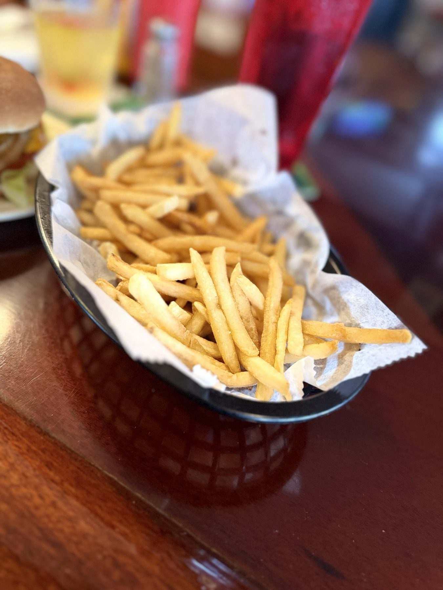

ITEM 1
Cheeseburgers
Straight-up burgers with lettuce, tomato and onion on a plain plate.
El Cap · Pinellas Park
El Cap Restaurant serves Pinellas Park from St. Petersburg.
Coming from Pinellas Park? El Cap Restaurant is on 4th Street North in St. Petersburg. Cheeseburgers, fries and beer, open daily from 11 AM.
What to order
Where to start.
Straight-up burgers with lettuce, tomato and onion on a plain plate.

Fries or tots on the side, in a paper-lined basket.

Pull up a stool at the bar. Beer, a burger and the TVs on.
4.4 ★ · 3476 Google reviews
Great for a quick burger and a beer. This bar burger is consistent. The bar staff is friendly!
Great burger place to stop at before catching a game at the Trop. Burger was juicy and tasty. Also really enjoyed the fried broccoli cheddar bites as an appetizer. Staff was extremely helpful and friendly, even to a guy in a Yankee cap.
Came here for a real early dinner (4:45p ish) tonight and it was a great call. This place has been on my radar for awhile. It started with the ever friendly bartender, Dennis. He was very welcoming and it felt like a true neighborhood bar. After a Mich Ultra, I dove into their Medium Rare, “World Champ Cheeseburger” with lettuce, tomato and grilled onions. It was a simple, perfect burger.
Had heard of this burger place from the Internet, and finally made it here. The burgers are as good as advertised! I had the double, double, and it tasted amazing. My wife had the regular cheeseburger and it filled her up We got both fries and the tator tots...I preferred the latter, while wifey loved the French fries. But we're really good and booked perfectly. We finished it off with IBC root beer.